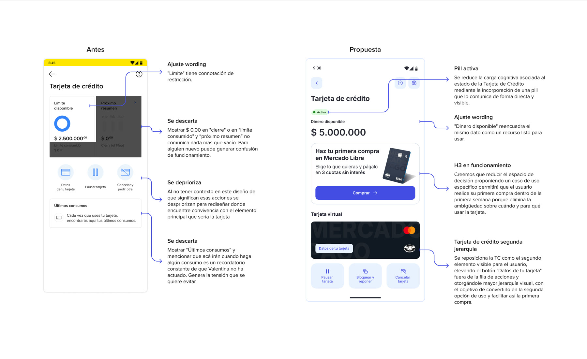
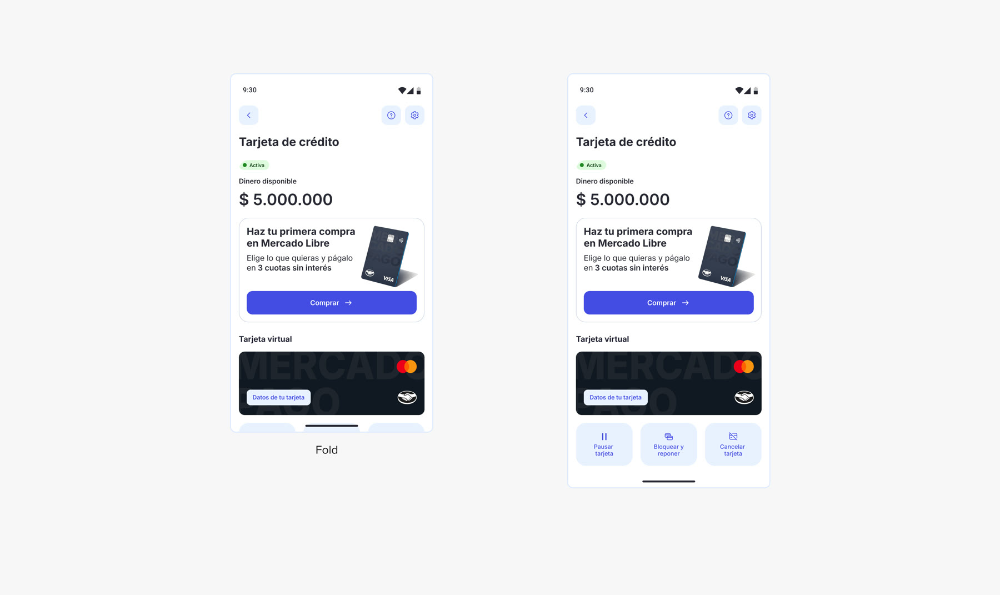
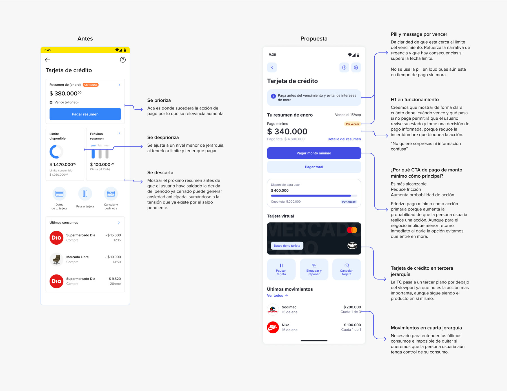
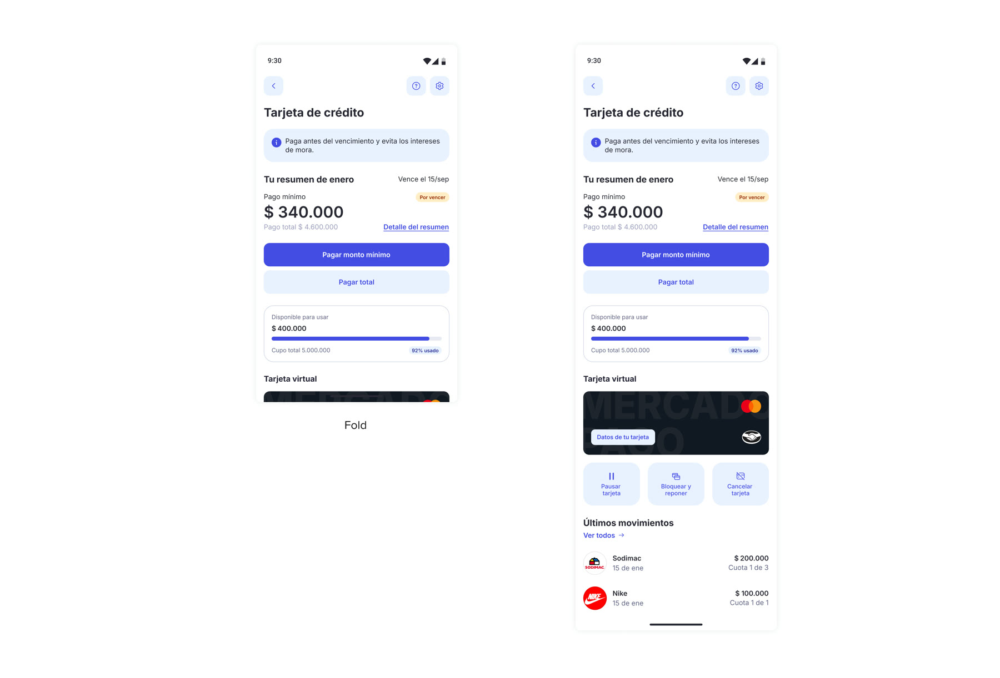
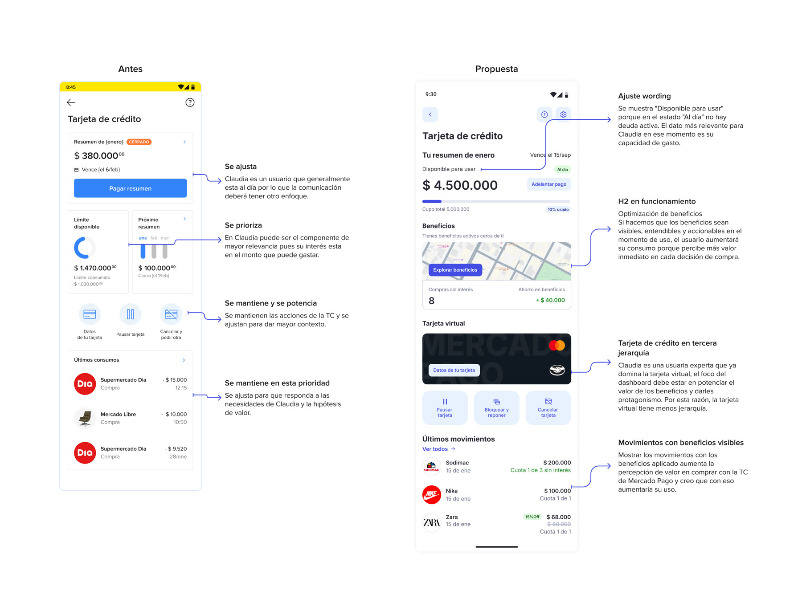
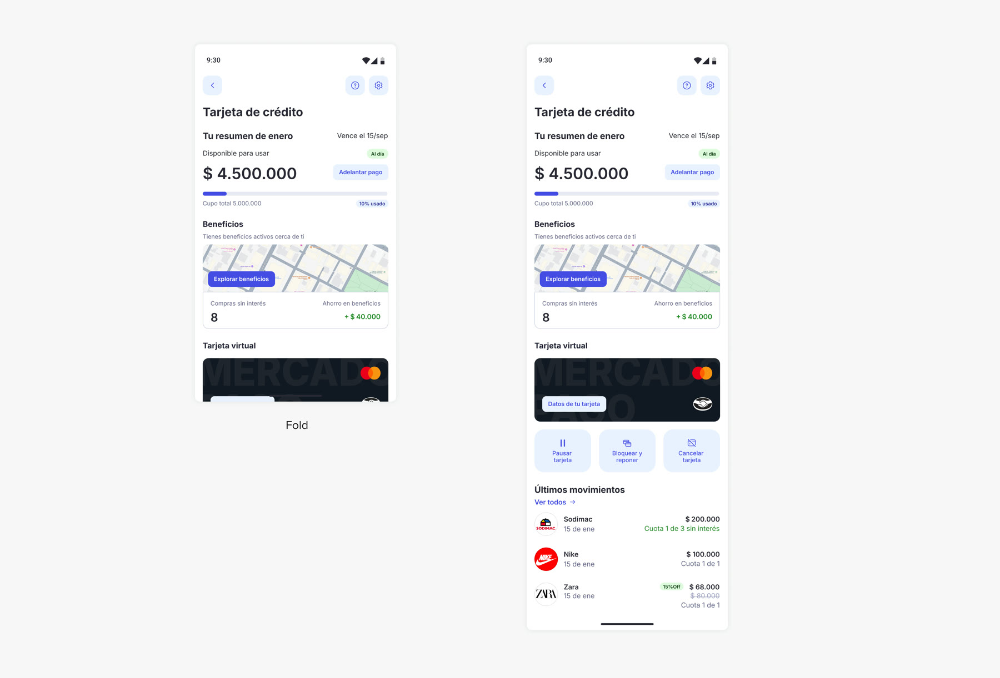

01El pedidoThe brief
A partir del dashboard de tarjeta de crédito y su sistema de estados adaptativos, diseñar cómo debe verse y comunicarse para tres situaciones de usuario distintas.
Starting from the credit-card dashboard and its adaptive-state system, design how it should look and speak for three different user situations.
Restricción fija: el lugar impactado es siempre el dashboard de TC. Cada caso parte de datos a consultar, un insight, supuestos explícitos y varias hipótesis con su riesgo de negocio, y termina en una sola decisión argumentada.
Fixed constraint: the surface is always the credit-card dashboard. Each case starts from data to check, an insight, explicit assumptions and several hypotheses with their business risk, and ends in one argued decision.
Elige un usuario · el caso cambia según su situaciónChoose a user · the case changes with their situation
02ProblemaProblem
Activan la tarjeta, pero no hacen la primera compra.
They activate the card, but never make a first purchase.
Los usuarios como Valentina, que activan la tarjeta, no compran en el corto plazo. Eso reduce la adopción y la generación de ingresos.
Users like Valentina activate the card but don't buy soon after. That lowers adoption and revenue.
Datos a consultar: % que entra al dashboard en los primeros 7 días post-activación · ventana en que ocurre el problema · % de usuarios en este estado · activan vs. compran.
Data to check: % who open the dashboard within 7 days of activation · the time window of the problem · % of users in this state · activate vs. purchase.
03Insight
Tiene capacidad para usarla, pero no claridad sobre cómo ni una razón concreta para actuar. El freno no es falta de valor: es falta de certeza y dirección.
They can use the card, but have no clarity on how, nor a concrete reason to act. The blocker isn't lack of value: it's lack of certainty and direction.
04ObjetivosGoals
Aumentar la conversión de la primera compra en la primera semana post-activación.
Raise first-purchase conversion in the first week after activation.
Que el usuario toque el CTA de primera compra y complete al menos una transacción en la sesión.
The user taps the first-purchase CTA and completes at least one transaction in the session.
- S1Una primera compra pequeña y exitosa genera hábito.A small, successful first purchase builds habit.
- S2Tiene intención de comprar, pero no le hemos dicho cuándo.They intend to buy, but we haven't told them when.
- S3El freno es la incertidumbre sobre el primer paso, no la falta de intención.The blocker is uncertainty about the first step, not lack of intent.
05HipótesisHypotheses
Confianza: reducir el riesgo percibido
Trust: reduce perceived risk
Mensajes de seguridad, simulación de uso y confirmaciones claras disminuyen el miedo a «hacerlo mal».
Security messages, usage simulation and clear confirmations lower the fear of "doing it wrong".
RiesgoRiskMás complejidad puede sumar fricción y bajar la conversión.More complexity can add friction and lower conversion.
Timing: incentivar en el momento de mayor intención
Timing: nudge at peak intent
Mensaje o incentivo justo después de la activación o durante la primera semana. Es más un problema de canal que de interfaz.
A message or incentive right after activation or during week one. More a channel problem than an interface one.
RiesgoRiskSaturar el momento inicial y afectar la activación.Overloading the first moment and hurting activation.
Reducir la fricción decisionalReduce decision frictionSeleccionadaSelected
Proponer un caso de uso específico reduce el espacio de decisión y elimina la ambigüedad de cuándo y para qué usar la tarjeta.
Proposing one specific use case narrows the decision space and removes the ambiguity of when and what to use the card for.
RiesgoRiskAsociar la tarjeta a un único uso y limitar el volumen futuro.Tying the card to a single use and capping future volume.
06DecisiónDecision
El primer caso de uso es Mercado Libre.
The first use case is Mercado Libre.
El CTA «Comprar» lleva a las últimas cuatro publicaciones agregadas a favoritos: menos incertidumbre y una decisión acotada. El ecommerce del ecosistema suma valor (descuentos, cuotas sin interés, cashback), impulsa la adopción y beneficia a las dos unidades de negocio.
The "Buy" CTA leads to the last four items added to favorites: less uncertainty and a narrower decision. The ecosystem's ecommerce adds value (discounts, interest-free installments, cashback), drives adoption and benefits both business units.
Riesgos asumidos: que lo último que guardó no sea lo que quiere comprar ahora · que la redirección se sienta invasiva. La comunicación fuera del dashboard (el momento del journey) debe acompañar el diseño.
Accepted risks: the latest saved items may not be what they want to buy now · the redirect may feel intrusive. Communication outside the dashboard (the journey moment) must support the design.
07MediciónMeasurement
02ProblemaProblem
Cerca del límite y del vencimiento, no pagan a tiempo.
Near the limit and the due date, they don't pay on time.
Los usuarios como Marcos no ejecutan acciones de pago a tiempo, y eso incrementa la tasa de mora.
Users like Marcos don't act on payment in time, which pushes delinquency up.
Datos a consultar: % en mora en el segmento · pago mínimo vs. total vs. no paga · días promedio de atraso · % de usuarios con el cupo al límite.
Data to check: % delinquent in the segment · minimum vs. full vs. no payment · average days late · % of users at their credit limit.
03Insight
No necesita más información, necesita claridad accionable. La incertidumbre sobre su deuda genera ansiedad, y la ansiedad lo lleva a evitar la app o a decidir de forma reactiva.
They don't need more information, they need actionable clarity. Uncertainty about their debt breeds anxiety, and anxiety leads them to avoid the app or decide reactively.
04ObjetivosGoals
Reducir la mora y aumentar el pago a tiempo en usuarios con alto uso de crédito.
Reduce delinquency and increase on-time payment among heavy credit users.
Que el usuario seleccione una acción de pago antes de la fecha de vencimiento.
The user picks a payment action before the due date.
- S1No paga porque no entiende su situación, no porque no pueda.They don't pay because they don't understand their situation, not because they can't.
- S2No sabe qué acción concreta tomar, no es que no quiera.They don't know what concrete action to take, not that they don't want to.
- S3Puede no abrir el dashboard en el momento crítico, lo que limita cualquier mejora de interfaz.They may not open the dashboard at the critical moment, which limits any interface fix.
- S4Si entiende las consecuencias concretas de no pagar, actúa.If they grasp the concrete consequences of not paying, they act.
05HipótesisHypotheses
Claridad (control)Clarity (control)SeleccionadaSelected
Mostrar cuánto debe, cuándo vence y qué pasa si no paga reduce la incertidumbre que bloquea la acción.
Showing how much is owed, when it's due and what happens if unpaid removes the uncertainty that blocks action.
RiesgoRiskSobrecargar con datos financieros puede aumentar la ansiedad y la evitación.Overloading with financial data can raise anxiety and avoidance.
Acción guiada
Guided action
Ofrecer «pago mínimo» y «pago total» como acciones claras. Complementa a H1.
Offer "minimum payment" and "full payment" as clear actions. Complements H1.
RiesgoRiskIncentivar el mínimo puede afectar ingresos por intereses y hábitos de pago.Encouraging the minimum can affect interest revenue and payment habits.
Anticipación (timing)
Anticipation (timing)
Mostrar la información en días previos al vencimiento o al superar cierto % de uso.
Surface the information in the days before the due date or past a usage threshold.
RiesgoRiskExceso de alertas: fatiga y notificaciones desactivadas.Too many alerts: fatigue and disabled notifications.
Evitación / capacidad: sin intervención en el dashboard
Avoidance / capacity: no dashboard intervention
Si el bloqueo es capacidad económica real, el usuario no pagará sin importar cómo se presente la información.
If the blocker is real financial capacity, the user won't pay no matter how the information is presented.
RiesgoRiskInvertir en UX sin reducir la mora.Investing in UX without reducing delinquency.
06MediciónMeasurement
02ContextoContext
Alto uso, paga a tiempo, aprovecha beneficios.
Heavy usage, pays on time, uses benefits.
No hay un problema evidente: para Claudia el dashboard es una herramienta de control y optimización. Se deduce que los usuarios avanzados necesitan eficiencia y control sin fricción. Es probablemente el segmento más valioso para el negocio.
There is no obvious problem: for Claudia the dashboard is a control and optimization tool. The deduction is that advanced users need efficiency and frictionless control. It is likely the most valuable segment for the business.
Datos a consultar: frecuencia de uso · % de uso de beneficios · beneficios aplicados por mes.
Data to check: usage frequency · % benefit usage · benefits applied per month.
03Insight
Para el usuario avanzado el dashboard no informa ni educa: es una interfaz de control operativo. El valor está en ejecutar y optimizar rápido. No quiere guía, ni educación, ni simplificación excesiva.
For the advanced user the dashboard doesn't inform or teach: it's an operational control surface. The value is in executing and optimizing fast. No guidance, no education, no over-simplification.
04ObjetivosGoals
Aumentar el volumen transaccional y el uso eficiente de beneficios en usuarios de alto valor.
Grow transaction volume and efficient benefit usage among high-value users.
Que identifique y aplique beneficios relevantes al transaccionar. Acción observable: toca «Explorar beneficios» o elige uno aplicable.
They identify and apply relevant benefits when transacting. Observable action: tap "Explore benefits" or pick an applicable one.
- S1La frecuencia de uso la limita el tiempo que tarda en encontrar lo que necesita.Usage frequency is capped by the time it takes to find what they need.
- S2Aplica beneficios cuando el valor es concreto y visible en el momento de la transacción.They apply benefits when the value is concrete and visible at the moment of transaction.
- S3Entra al dashboard según su sensación de control financiero, no por consultar datos básicos.They open the dashboard for a sense of financial control, not to look up basic data.
05HipótesisHypotheses
Eficiencia operativa
Operational efficiency
Reducir el tiempo para llegar a la información clave aumenta la frecuencia de gestión.
Cutting the time to reach key information increases how often they manage the card.
RiesgoRiskOptimización marginal, sin impacto en ingresos.Marginal optimization with no revenue impact.
Optimización de beneficiosBenefit optimizationSeleccionadaSelected
Beneficios visibles, entendibles y accionables en el momento de uso acortan la distancia cognitiva entre la decisión de compra y el beneficio disponible.
Benefits that are visible, understandable and actionable at the moment of use shorten the cognitive distance between the purchase decision and the available benefit.
RiesgoRiskLa sobreexposición de beneficios puede afectar costos.Over-exposing benefits can raise costs.
Control avanzado
Advanced control
Herramientas como categorización de gastos y proyección de cupo aumentan la frecuencia de revisión.
Tools like spend categorization and limit projection increase how often they check in.
RiesgoRiskComplejidad innecesaria para la mayoría.Needless complexity for most users.
06MediciónMeasurement
Nota estratégica: no diseñar primero para este segmento, sino usarlo para responder qué hacen estos usuarios que los demás no.
Strategic note: don't design for this segment first; use it to learn what these users do that the others don't.
01Tres estados, un sistemaThree states, one system
Los mismos módulos, reordenados por intención: cambia lo que va primero, lo que se silencia y cuál es el único botón que importa.
The same modules, reordered by intent: what comes first, what gets muted, and the one button that matters all change.
Valentina (activación) · Marcos (mora) · Claudia (optimización)
Valentina (activation) · Marcos (delinquency) · Claudia (optimization)
02Qué se mueveWhat moves
Una acción primaria por estado
One primary action per state
«Comprar», «Pagar monto mínimo» y «Explorar beneficios». El botón principal cambia; el resto queda como acción secundaria.
"Buy", "Pay minimum" and "Explore benefits". The primary button changes; everything else drops to secondary.
Una pill dice cómo estás
A pill says where you stand
«Activa», «Por vencer» y «Al día» reemplazan datos que en ese momento no comunican nada, como un $0 en el límite consumido.
"Active", "Due soon" and "Up to date" replace data that says nothing at that moment, like a $0 consumed limit.
La tarjeta baja de nivel
The card drops a level
La tarjeta virtual pasa de protagonista a segundo plano en Valentina y a tercer plano en Marcos y Claudia, según qué decisión toca hoy.
The virtual card goes from protagonist to second tier for Valentina, and to third tier for Marcos and Claudia, depending on the decision at hand.
Elige un usuario · cambia la propuesta visualChoose a user · the visual proposal changes
03Antes y despuésBefore & after

04Fold

Lo que se ve sin hacer scroll · a la derecha, con las acciones de la tarjeta
What's visible without scrolling · right, with card actions
03Antes y despuésBefore & after

04Fold

El pago se decide sin hacer scroll
The payment is decided without scrolling
03Antes y despuésBefore & after

04Fold

Los beneficios aparecen antes que la tarjeta
Benefits appear before the card
05Sistema de diseño en usoDesign system in use
Todo sobre Andes, ajustado a lo que el producto necesitaba.
Everything built on Andes, tuned to what the product needed.
Elige un usuario · cambian la pantalla y sus componentesChoose a user · the screen and its components change
Pasa el cursor sobre una caja o una fila para ubicarla · cada número es un componente de librería
Hover a box or a row to locate it · each number is a library component